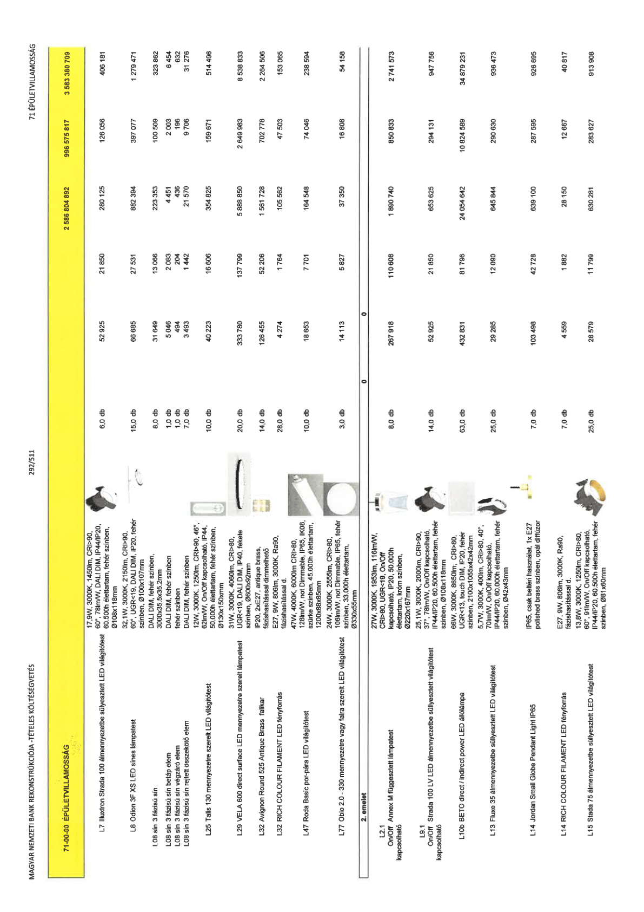

| Tétel | Menny. | Egys. | Anyag e.ár (net HUF) | Díj e.ár (net HUF) | Anyag összesen (net HUF) | Díj összesen (net HUF) | Anyag+Díj összesen (net HUF) |
|---|---|---|---|---|---|---|---|
| 71-00-00 ÉPÜLETVILLAMOSSÁG | NaN | NaN | 0 | 0 | 2 586 804 892 | 996 575 817 | 3 583 380 709 |
| 17,9W, 3000K, 1450lm, CRI>90, 60°, 78lm/W, DALI DIM, IP44/IP20, 60.500h élettartam, fehér színben, Ø108x118mm | 0 | 0 | 0 | 0 | 0 | 0 | 0 |
| L7 Illuxtron Strada 100 álmennyezetbe süllyesztett LED világítótest | 6,0 | db | 52 925 | 21 850 | 280 125 | 126 056 | 406 181 |
| 32,1W, 3000K, 2150lm, CRI>90, 60°, UGR<19, DALI DIM, IP20, fehér színben, Ø100x107mm | 0 | 0 | 0 | 0 | 0 | 0 | 0 |
| L8 Odion 3F XS LED sínes lámpatest | 15,0 | db | 66 685 | 27 531 | 882 394 | 397 077 | 1 279 471 |
| DALI DIM, fehér színben, 3000x35.5x35.2mm | 0 | 0 | 0 | 0 | 0 | 0 | 0 |
| L08 sín 3 fázisú sín | 8,0 | db | 31 649 | 13 066 | 223 353 | 100 509 | 323 862 |
| DALI DIM, fehér színben | 0 | 0 | 0 | 0 | 0 | 0 | 0 |
| L08 sín 3 fázisú sín betáp elem | 1,0 | db | 5 046 | 2 083 | 4 451 | 2 003 | 6 454 |
| fehér színben | 0 | 0 | 0 | 0 | 0 | 0 | 0 |
| L08 sín 3 fázisú sín végzáró elem | 1,0 | db | 494 | 204 | 436 | 196 | 632 |
| DALI DIM, fehér színben | 0 | 0 | 0 | 0 | 0 | 0 | 0 |
| L08 sín 3 fázisú sín rejtett összekötő elem | 7,0 | db | 3 493 | 1 442 | 21 570 | 9 706 | 31 276 |
| 12W, 3000K, 1250lm, CRI>90, 46°, 62lm/W, On/Off kapcsolható, IP44, 50.000h élettartam, fehér színben, Ø130x150xmm | 0 | 0 | 0 | 0 | 0 | 0 | 0 |
| L25 Talls 130 mennyezetre szerelt LED világítótest | 10,0 | db | 40 223 | 16 606 | 354 825 | 159 671 | 514 496 |
| 31W, 3000K, 4060lm, CRI>80, UGR<19, DALI DIM, IP40, fekete színben, Ø600x92mm | 0 | 0 | 0 | 0 | 0 | 0 | 0 |
| L29 VELA 600 direct surface LED mennyezetre szerelt lámpatest | 20,0 | db | 333 780 | 137 799 | 5 888 850 | 2 649 983 | 8 538 833 |
| IP20, 2xE27, antique brass, fázishasítással dimmelhető | 0 | 0 | 0 | 0 | 0 | 0 | 0 |
| L32 Avignon Round 525 Antique Brass falikar | 14,0 | db | 126 455 | 52 206 | 1 561 728 | 702 778 | 2 264 506 |
| E27, 9W, 806lm, 3000K, Ra90, fázishasítással d. | 0 | 0 | 0 | 0 | 0 | 0 | 0 |
| L32 RICH COLOUR FILAMENT LED fényforrás | 28,0 | db | 4 274 | 1 764 | 105 562 | 47 503 | 153 065 |
| 47W, 4000K, 6000lm CRI>80, 128lm/W, not Dimmable, IP65, IK08, szürke színben, 45.000h élettartam, 1200x88x85mm | 0 | 0 | 0 | 0 | 0 | 0 | 0 |
| L47 Roda Basic por-pára LED világítótest | 10,0 | db | 18 653 | 7 701 | 164 548 | 74 046 | 238 594 |
| 24W, 3000K, 2555lm, CRI>80, 106lm/W, not Dimmable, IP65, fehér színben, 33.000h élettartam, Ø330x55mm | 0 | 0 | 0 | 0 | 0 | 0 | 0 |
| L77 Oblo 2.0 - 330 mennyezetre vagy falra szerelt LED világítótest | 3,0 | db | 14 113 | 5 827 | 37 350 | 16 808 | 54 158 |
| 2. emelet | NaN | NaN | 0 | 0 | 0 | 0 | 0 |
| 27W, 3000K, 1953lm, 116lm/W, CRI>80, UGR<19, On/Off kapcsolható, IP20, 50.000h élettartam, króm színben, Ø220x167mm | 0 | 0 | 0 | 0 | 0 | 0 | 0 |
| L2.1 On/Off kapcsolható Annex M függesztett lámpatest | 8,0 | db | 267 918 | 110 608 | 1 890 740 | 850 833 | 2 741 573 |
| 25,1W, 3000K, 2000lm, CRI>90, 37°, 78lm/W, On/Off kapcsolható, IP44/IP20, 60.500h élettartam, fehér színben, Ø108x118mm | 0 | 0 | 0 | 0 | 0 | 0 | 0 |
| L9.1 On/Off kapcsolható Strada 100 LV LED álmennyezetbe süllyesztett világítótest | 14,0 | db | 52 925 | 21 850 | 653 625 | 294 131 | 947 756 |
| 66W, 3000K, 8650lm, CRI>80, UGR<13, touch DIM, IP20, fehér színben, 2100x1055x42x42mm | 0 | 0 | 0 | 0 | 0 | 0 | 0 |
| L10b BETO direct / indirect power LED állólámpa | 63,0 | db | 432 831 | 81 796 | 24 054 642 | 10 824 589 | 34 879 231 |
| 5,7W, 3000K, 400lm, CRI>80, 40°, 70lm/W, On/Off kapcsolható, IP44/IP20, 60.000h élettartam, fehér színben, Ø42x43mm | 0 | 0 | 0 | 0 | 0 | 0 | 0 |
| L13 Fluxe 35 álmennyezetbe süllyesztett LED világítótest | 25,0 | db | 29 285 | 12 090 | 645 844 | 290 630 | 936 473 |
| IP65, csak beltéri használat, 1x E27 polished brass színben, opál diffúzor | 0 | 0 | 0 | 0 | 0 | 0 | 0 |
| L14 Jordan Small Globe Pendant Light IP65 | 7,0 | db | 103 498 | 42 728 | 639 100 | 287 595 | 926 695 |
| E27, 9W, 806lm, 3000K, Ra90, fázishasítással d. | 0 | 0 | 0 | 0 | 0 | 0 | 0 |
| L14 RICH COLOUR FILAMENT LED fényforrás | 7,0 | db | 4 559 | 1 882 | 28 150 | 12 667 | 40 817 |
| 13,8W, 3000K, 1250lm, CRI>80, 60°, 91lm/W, On/Off kapcsolható, IP44/IP20, 60.500h élettartam, fehér színben, Ø81x60mm | 0 | 0 | 0 | 0 | 0 | 0 | 0 |
| L15 Stada 75 álmennyezetbe süllyesztett LED világítótest | 25,0 | db | 28 579 | 11 799 | 630 281 | 283 627 | 913 908 |
